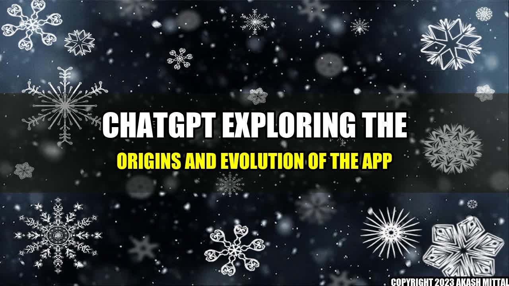

ChatGPT: Exploring the Origins and Evolution of the App
It all started in 2015, when a young computer science student named Adam Larson was struggling to find a way to stay connected with his friends and family back home. He had moved to a new city to pursue his studies, and he missed the casual conversations and inside jokes that had made his relationships special. One day, he had an idea: What if he could create a chat app that was both fun and functional, something that people could use to communicate without feeling like they were wasting their time?
Adam started working on the app in his spare time, using his programming skills to create a simple platform that allowed users to send messages, photos, and videos in real time. He also added a few innovative features, such as smileys, colorful backgrounds, and virtual gifts, that made the app more engaging and entertaining.
The app quickly caught on with Adam's friends and classmates, who started using it to chat with each other and share their experiences. Word of mouth spread, and soon other people started downloading ChatGPT from app stores and social media sites. Within a few months, the app had thousands of users, and Adam realized that he had stumbled upon something big. He decided to work on ChatGPT full-time, and began to recruit other developers and designers to help him improve and expand the app.
Akash Mittal Tech Article
Share on Twitter Share on LinkedIn